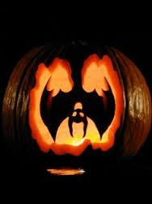

Recommended You will need a pumpkin carving kit but if you don’t have one or can't find one a couple decent sized knifes will do, and you will need a pumpkin, make sure it is big enough for your design and you will need a candle any type will do but you should probably use an electric one so it will last for a while.
For this we will be using this design.
You will first need to take the pumpkin and cut out an area around the stem big enough to get your hand in, after that you're going to need to clean out the center of it of all the gooey bits and the seeds, make sure to put the seeds aside as you can make a snack out of them, then once you're done with that you can have the top off to the side or just put it back on, we can now get to the actual carving of the pumpkin, first you should use a marker or something to draw out the design so in our case we would be drawing out the bat design with the eyes and all the details it has,
now once you are done marking it out grab your carving tool or knife and start cutting on the marker line make sure you cut it correctly and not cutting out the wrong part or else the design won't work as well, cut around the design and once you're done that cut the eyes and other bits, if your chosen design has them once you're done cutting out your design you need to find your candle,
grab your candle and place it gently inside the pumpkin you just carved and make sure it can turn on, turn it on and place it on if you want to test how it looks with the light in it and place the top back on the pumpkin and your design should be completely done and ready to be placed on your door step for everyone to see.